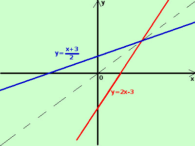

|
sviluppo Data la seguente funzione determinatene, se possibile, la funzione inversa indicandone anche le eventuali restrizioni nel dominio y = 2x - 3 La funzione e' definita in tutto ℜ, si tratta di una retta nel piano  per trovarne l'inversa scambio tra loro x ed y x = 2y - 3 esplicito la y -2y = - x - 3 2y = x + 3
Anche l'inversa e' definita in tutto ℜ |